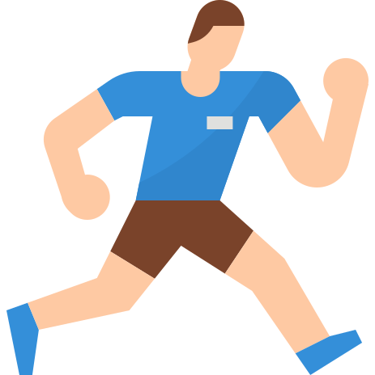
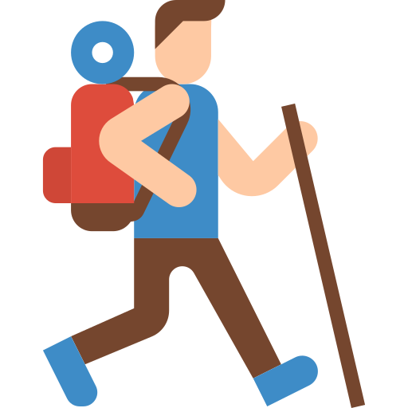
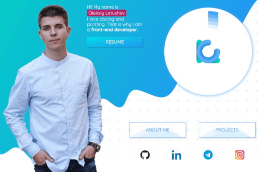
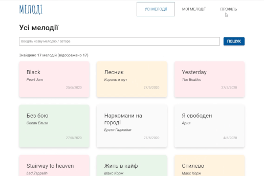
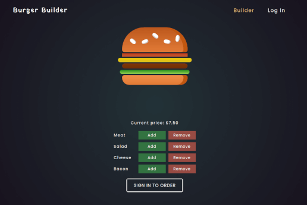
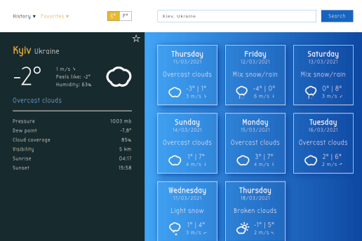
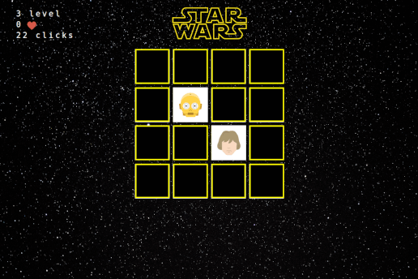
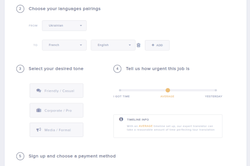

Hi! My name is Oleksiy Letushev
I love coding and painting. That is why I am a front-end developer.
Resume


About me
Hi there! My name is Oleksiy Letushev and I am a 21-year-old web developer. Currently, I am residing and working in Kyiv, Ukraine.
In my childhood, I was into painting. I was so obsessed with Vincent van Gogh and his art, that I recreated a lot of his masterpieces by myself.
At school, I had no problems with maths, informatics, and physics, so I considered studying a technical specialization at university.
I graduated from the Taras Shevchenko National University of Kyiv with a bachelor's degree in computer science a year ago. That was an exciting and sometimes extremely challenging period of my life. I am very thankful to the university for giving me such important fundamental programming skills as C++, C#, ASP.NET, Java, Python, OOP, SQL. However, I had to study a lot of higher mathematics at the Faculty of Computer Science and Cybernetics. That was okay with me as I love maths, but not exactly what I aimed at. I missed creating something visually attractive.
I remember reading my first book about web development - HTML and CSS: Design and Build Websites by Jon Duckett. It literally made me relish creating eye-catching websites and that was the beginning of my journey as a front-end developer.
I have completed an outstanding practical course Kottans, which gave me a deep understanding of HTML, CSS, and vanilla JavaScript.
Then, I have been working as a front-end developer at ЛУН for a year. I've gained a lot of experience there due to team work on a big complex project. I have mastered plenty of new skills and tools such as: React, Git, GitHub, Webpack, SCSS, MobX, and many more.
I have learned how to:
- build responsive user-friendly layouts
- create attention-grabbing animations
- build UI with reusable React components
- communicate with a server
- manage complex data state in a browser
- work with multilingualism and so on
My passion for web development is rapidly growing, so I try to learn and practice new skills and techniques every day.
In my spare time, I love playing the guitar  , watching movies , listening to music
, watching movies , listening to music  , or doing any kind of sport, especially running
, or doing any kind of sport, especially running

. Also, I am keen on hiking
.I have a great desire to become a professional web developer and teach other people how to do this kind of magic !
Projects

Portfolio
Personal portfolio landing page with responsive design and smooth animations.
- Responsive design
- Canvas animation
- Webpack configuration

Мелоді
Fullstack progressive web application built with React and GraphQL for creating, editing, and sharing guitar tabs.
- React
- GraphQL server
- Prisma
- Progressive Web App
- Docker
- Search & Pagination
- Authorization
- Responsive design

Burger Builder
SPA for building and ordering burgers. Users can sign up, log in, build burgers by adding ingredients, place an order.
- React
- Redux
- Firebase
- Authorization
- Routing

Weather App
Simple weather application built with plain JS. Users can seach weather forecast for any location, view search history, and add favorite cities.
- Weatherbit API
- Vanilla JS
- SCSS

Memory Pair Game
Simple native JS game to improve your memory with Star Wars characters.
- Vanilla JS

Checkout Page
Complex HTML & CSS form with custom controls.
- HTML
- CSS